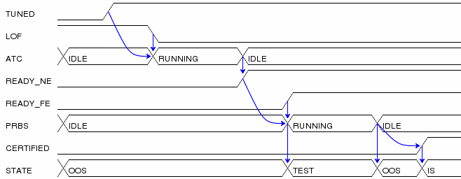

TUTORIAL
Let's dissect an example input file as a means of learning the
file format:
# initialize the signals
POWER=0, FIRE=0, ARMED=0, LED=OFF, COUNT=N.
# turn on the power
POWER=1 => LED=GREEN.
# fire once to arm
FIRE=1.
FIRE => ARMED=1.
FIRE=0.
# fire a second time
FIRE=1.
FIRE, ARMED => LED=RED;
FIRE => COUNT="N+1".
Here is the resulting
output image:

This input file descibes the changes in five signals over a
period of seven clock cycles. The end of each clock cycle is
indicated with a period. For example, the following line
indicates a single signal, named FIRE, became true during a clock
cycle:
FIRE=1.
The first clock period of the input file provides the initial
value for all signals to be diagrammed. The signals will appear
on the timing diagram in the order they first appear in the input
file.
Signals are assumed to have the "don't care" value if their initial
value is not given.
Independent signal transitions which occur simultaneously are
normally
seperated by commas. Since signals aren't normally expected to change
simultaneously, the initial state is a good example of this:
POWER=0, FIRE=0, ARMED=0, LED=OFF.
Dependencies can also be indicated for a signal transition.
Dependencies are rendered as arrows on the timing diagram from the
last change in each dependency to the dependent signal transition.
Here, the previous change in the state of FIRE causes a change in the
ARMED
signal.
FIRE => ARMED=1.
To indicate that a change in one signal causes an immediate
change in
another signal, list both signal changes in the same clock period:
POWER=1 => LED=GREEN.
For signal state changes with multiple dependencies, seperate
the
dependencies with commas:
FIRE, ARMED => LED=RED.
Sometimes, a single dependency causes multiple independent
signals to
change. Use a semicolon to start a new list of dependencies.
Modifying the previous line to indicate that FIRE also causes COUNT to
increment yields:
FIRE, ARMED => LED=RED;
FIRE => COUNT="N+1".
OCH TURNUP
Here is a sample input file representing an optical channel
turnup.
# Define the initial state of the signals.
TUNED=0, LOF=1, ATC=IDLE, READY_NE=0, READY_FE=0, PRBS=IDLE,
CERTIFIED=0, STATE=OOS.
# TUNED is set after autotuning finishes
TUNED=1.
# LOF clear while TUNED triggers ATC
LOF=0, TUNED => ATC=RUNNING.
# a period by itself indicates a time period in which nothing changed.
.
# READY is set in the overhead when ATC finishes
ATC=IDLE => READY_NE=1.
# when READY is set at both ends, PRBS runs
READY_FE=1, READY_NE => PRBS=RUNNING => STATE=TEST..
# when PRBS finishes, the channel gets CERTIFIED and goes in-service
PRBS=IDLE => STATE=OOS.
PRBS => CERTIFIED=1 => STATE=IS.
Here is the corresponding timing diagram:

SIGNAL VALUES
Here is a sample showing all of the available signal values:
BOOL=0, TICK=tick, PULSE=0, X=X, Z=Z, STATE=A.
BOOL=1, PULSE=pulse, STATE=B.
.
Here is the corresponding timing diagram:

|